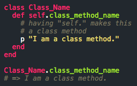
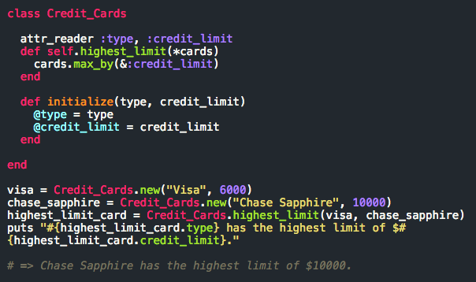

Class Methods or Nah?
May 14, 2015
For this blog, I'm gonna be piggybacking off of the Ticket example from Chapter 3 of The Well Grounded Rubyist, because well, of all the resources I've gone through it provided the best example in my opinion. One quick thing to keep in mind: "objects are instances of classes."
Let's say we have a class, Credit_Cards. If we wanted to, we could create a new Credit_Cards object to create say, a Visa credit card. Any method defined within our Credit_Cards class using the convention 'def methodname' is an instance method, meaning we can pass it as a message to our new Visa card object since it's an instance of the class Credit_Cards. In short, a Class instance method works for an instance of a Class. An example of how to create a class method and how to call it can be seen in the figure below. Note that there are other ways for creating and calling class methods though.
Class methods on the otherhand are inaccessible by class instances though (supposedly you can if you explicitly reference them, but let's not worry about that for now). Class methods work by being passed as messages to the actual Class in which they're defined (remember, classes are objects, too), rather than to an instance of the class. The question of when to use a class method may be a tricky one to answer, but one "simple" answer may arise after answering the question, "Is this operation that a single instance should be able to do?"
The last question may not make much sense, so let's consider the Class.new method. Class.new is a class method because well, it wouldn't make sense to have it as an instance method. If it were, then an instance of a class would basically be able to instantiate another instance of the same class and so forth. So in terms of our credit card example, a credit card would be able to "create" another credit card. That might be cool, but it wouldn't be if you ended up racking more debt. Not desirable. And just imagine if instead of credit cards, we were using a Dollar_Bills class. Each dollar would be able to generate another dollar... Well that may not be so bad, but it's probably illegal. Anyways, the point is, there's things that instances should be able to do and shouldn't be able to do.
Something that our Visa credit card most likely wouldn't be able to do is tell you which of your credit cards have the highest credit limit. Why? Because it only knows about itself in this case, being its own instance. You can probably have a method that prints a specific card's credit limit, but if we really wanted to see which of your current cards had the highest limit, it would make more sense to not look at 1 specific card and look at things in a collective way.
Having a class method instead, like "highest_limit" to find the card with the highest credit would be best suited for our example where running "Credit_cards.new()" creates a single credit card. It is worth noting however, that a class method may not be necessary if we were to have instead passed in an array of cards in say, a Card_Comparer class that had an instance method to run operations for us.
And like instance methods, class methods can take in a number of arguments as you can see from the example above. So again, when it comes down to whether or not to use them, it may really just come down to a matter of "Should a single instance be able to do this or nah?"